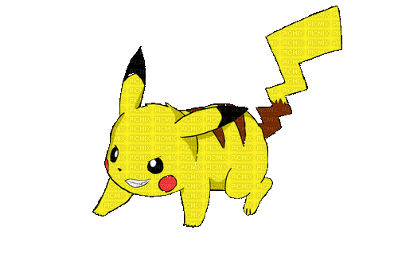
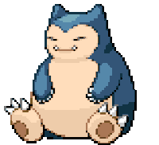
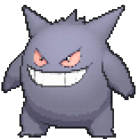

-
Bulbasaur #001

- Grama
- Veneno
Bulbasaur é dos tipos Planta e Veneno, notoriamente percebível por conta da grande planta em suas costas e de sua coloração verde-água. Sua classificação na Pokédex Nacional, Pokédex que merge todos os Pokémon de todas as regiões em uma, é #001.
-
Ivysaur #002

- Grama
- Veneno
Ivysaur, é um pokémon do tipo Grama e Venenoso introduzido na Primeira Geração. É a forma evoluída de Bulbasaur. Sua classificação na Pokédex Nacional, Pokédex que merge todos os Pokémon é de #002
-
Venusaur #003

- Grama
- Veneno
É conhecido como o Pokémon Semente. Venusaur é capaz de Mega Evolution, o que permite que ele se transforme em Mega Venusaur. Em Pokémon Sword and Shield, Venusaur tem uma forma Gigantamax, permitindo que ele se transforme em uma forma grande e especial de si mesmo quando se transforma em Dynamaxes. Ele evolui de Ivysaur, que por sua vez evolui de Bulbasaur .
-
Charmander #004

- Fogo
O fim da cauda de um Charmander é aceso com uma chama, a chama muda de tamanho conforme sua saúde física e as emoções do personagem.[2] Charmander evolui para Charmeleon e, em seguida, para Charizard.
-
charmeleon #005

- Fogo
A ponta de sua cauda longa e poderosa tem uma chama acesa. A temperatura sobe a níveis insuportáveis se Charmeleon balançar sua cauda. Charmeleon tem uma natureza cruel e constantemente procura oponentes. Oponentes fortes excitam este Pokémon, fazendo-o lançar chamas branco-azuladas que incendeiam seus arredores. No entanto, ele relaxará assim que vencer uma batalha . É raro na natureza, mas pode ser encontrado em áreas montanhosas .
-
Charizard #006

- Fogo
Diferentemente de suas pré-evoluções Charmander e Charmeleon, Charizard tem poderosas asas, com a parte de dentro num tom esverdeado com um leve azul, e a parte de trás no tom laranja. Tais asas lhe dão a habilidade do voo, que podem chegar a uma velocidade de 150 km/h.
-
Squirtle #007

- Água
Aparência, Características e Comportamento Squirtle é retratado como "Tiny Turtle Pokémon", ou Pokémon Tartaruga Pequena. Ele tem uma pele de coloração azulada e um casco resistente. Sua cauda é muito semelhante à cauda de um esquilo.
-
wartortle #008

- Água
Wartortle são pequenos bípedes Pokémon, tartarugas com uma aparência semelhante à de sua forma pré-evoluída, Squirtle. Algumas diferenças são que Wartortles desenvolveram garras e os dentes mais nítidas e maiores.
-
Blastoise #009

- Água
Blastoise tem um grande corpo azul, barriga de cor creme e um grande escudo marrom aros de branco, com seus canhões de água. É agora mais visivelmente mais volumoso do que suas evoluções anteriores. Como as suas formas pré-evoluídas.
-
caterpie #010

- Inseto
Caterpie é um pequeno Pokémon inseto de cor verde e possui um par de chifres rosa em sua cabeça. Quando fica com raiva é capaz de soltar pequenas teias pegajosas pela boca. Investida; Teia de Aranha (Tiro de Estilingue na primeira geração). Caterpie vem de caterpillar (lagarta) em inglês.
-
Pikachu #025
- Elétrico
A espécie Pikachu é descrita como um rato pela Pokédex e pode ser encontrada facilmente em florestas, geralmente em grupos. Como é do tipo elétrico, é capaz de armazenar eletricidade em suas bochechas vermelhas e pode descarregá-la em diferentes níveis de intensidade para diferentes propósitos.11 de jan. de
-
Snorlax #143
- Normal
Snorlax é um pokémon de tipo normal. Pokémon tipo normal mas eles são fracos contra pokémon do tipo Pedra.
-
#093 Haunter

- Fantasma
- Veneno
Ele gosta de se esconder no escuro e bater nos ombros com uma mão gasosa. Seu toque causa estremecimento sem fim.
-
#094 Gengar
- Fantasma
- Veneno
Gengar é um Pokémon do tipo Fantasma / Veneno, É conhecido como o Pokémon Sombra . Gengar possui uma Mega Evolução.
-
#011 Butter

- Inseto
- Voador
Butterfree tem a forma de uma borboleta. Seu corpo é roxo, tem olhos vermelhos e duas antenas pretas, sua boca é preta com dois dentes para fora, ele tem duas mãos pequenas azuis, seus pés são longos e azuis também, tem asas que são maiores que seu corpo e tem detalhes pretos.